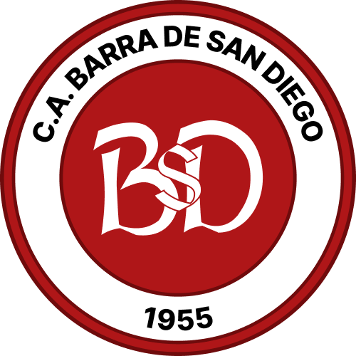
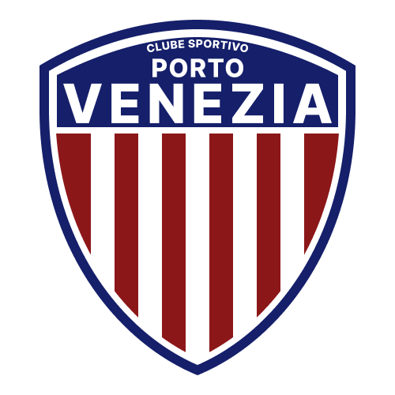

Jogo anterior
20 de dez. 2004, 18h00
Local: Estádio Olímpico da Barra
 Liga Desportiva San-Dieguense
1 x 4
Liga Desportiva San-Dieguense
1 x 4
 Liga Skebense de Desportos
Liga Skebense de Desportos

Federação de Futebol do San Mârtin
20 de dez. 2004, 18h00
Local: Estádio Olímpico da Barra
Liga Desportiva San-Dieguense
1 x 4
Liga Skebense de Desportos
Descrição da liga: a preencher.
História e objetivo da competição: a preencher.
Critérios de classificação e desempate: a preencher.
| Clube | Município | Situação |
|---|---|---|
 C.A. Barra de San Diego |
A definir | Participante |
 C.S. Porto Venezia |
A definir | Participante |